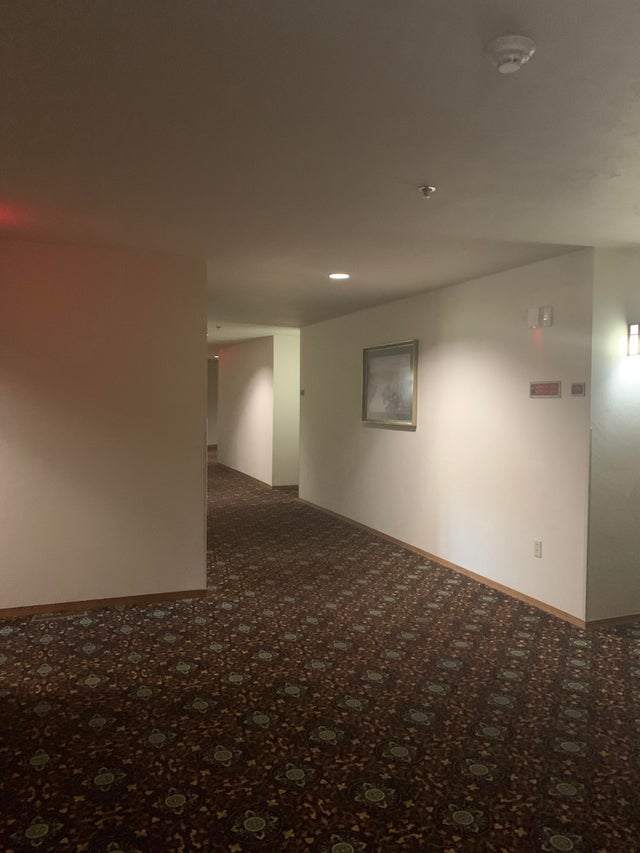

I researched stairs, not as an object, but as a narrative seed of potential. My motivation was a simple curiosity about what stories can be constructed from an object deemed mundane, at least by me. Stairs was an intuitive choice, maybe random, but randomness is an asset considering what I set out to do.
I started the research with broadening the chosen term as much as I could and then following as many associative paths as I could. All readings, curious facts, news articles I came across in the months of August to December were poured into the soup of other stories searching for links and narratives. Once an association was made, more reading and listening and associations in that direction followed. As a result there are many loose or thin threads left in the drafts. But more importantly, two sturdy, concluded, even interesting threads were woven.
Rather than constructing a cohesive self-contained reality in words, this piece is meant to explore the worlds beyond mundanity: a sink, a faucet, a flight of stairs, and hopefully point out the abundance of dimensions an object can be regarded with.
There is meaning in random connections and associations, there is value to not having a research question and not walking towards a goal, rather enjoying the space of transition and the abundance of possibilities.
To showcase the two previous points I chose stairs as my focus point, all subsequent stories are at their core linked to the initial object, and all stories have come from free research and exploration without a traditional research question.
Of course the absence of a research question that would narrow the field of interest already implies the presence of limitless possibility. Therefore I cannot address everything, the potential is, supposedly, infinite. So I will only cover the ground that I managed to organize into a solid narrative.
I would casually call my thesis the sink and the faucet. Because like the first studio I rented, it has pretty much everything you expect, except a sink and a faucet (read: hierarchical structure and narrative thread).
Rather than a line, this is a mind map, for that reason the chapters are not numbered and can be read in any order.
↑ Like my thesis, in this image there is no one up or down, first or second. Escher explores the way stairs can create and imply dimensions, therefore, exploring the stairs as an object as well. (Citing and sources for all images will be in the Bibliography)
I refuse to define “stairs” to preserve vagueness. I will squint my minds’ eye and see stairs in as broad of a sense as I can because vagueness gives stairs the most narrative potential. Let me take you on a side trip to explain exactly why I think vagueness holds power.
Dragons are a grandiose cross-cultural phenomenon in human folklore, from the Chinese Lung to the Vedic Vritra, Slavic Zmey, Aztec Quetzalcoatl, and many others, it seems to be inevitable that a civilization encounters this beast. So what is it about dragons that human nature is so compelled to remember them, to imagine them, to pass on their story? An essay on that topic might start with a definition, but I would like you, the reader, to imagine a dragon for yourself. Now. If you grew up in a western society with Disney movies and Arthurian Legends the dragon you saw in your mind might be the one I call knemesis, a knight's nemesis, and it is probably big, green, scaly, winged, and breathes fire. Equally likely it is for a dragon to be exactly none of those things. Any dragon you came up with within your mind, is very likely to have a counterpart, a "dragon" described in a different myth with exactly the opposite physical attributes. Morally a dragon could be evil, a mortal danger as the biblical sea serpent Leviathan mentioned in the Old Testament. 1 Or it might be a benevolent sky-god like the Australian aboriginal Rainbow Serpent who is regarded by some tribes as the supreme healer, the one that blessed humankind with blood and who is responsible for blood flow. 2 The Rainbow Serpent is a morally good creature. A dragon can as well be anywhere in between good and evil. There is an abundance of them and therefore a moral spectrum.
Anthropologist David E. Jones wrote the book “An Instinct for Dragons” that argues the pancultural presence of dragons has to do with an amalgamation of predators: raptors, great cats, pythons, etc. by hominids into a beast that became a part of the human psyche. 3 However the book received a very passionate negative review: “One is tempted to say, as Dorothy Parker once did, that this is a book not to be tossed aside lightly but thrown violently. But no, it is not worth spending even that much energy on.” by Paul Jordan-Smith who points out the lack of evidence and high amount of neglect and speculation in the previously mentioned book. 4
In the book “ Drakon: Dragon Myth and Serpent Cult in the Greek and Roman Worlds ” Daniel Ogden brings up Jones’ theory and also points out the lack of a system for choosing the imagery and narratives compiled as evidence. In his introduction Ogden explains what creatures exactly he will be exploring, but also points out most creatures are categorized as dragons from an outside perspective: “The focal subject matter is not defined [...] by an etic ‘dragon’ concept arbitrarily imposed from without ...” 5 I'd like to propose that another reason “dragons” so widespread is because so many different beings are categorized as “dragons”, at least Wikipedia and Encyclopedia Britannica both have a wide variety of creatures under the term dragon. 6
A unicorn can only be a horse with a horn, any deviation to form that morphology, and the creature is no longer a unicorn. Dragons however ... is it a vaguely serpent being? You have probably got yourself a dragon. One head, three or twelve, wings or no wings—irrelevant. "Vaguely" is the cornerstone of my definition. Vagueness is what gives the symbol of the dragon its remarkable potential.
I invite you to think of stairs, the ones you went down yesterday to take out the trash, the ones you walked up to get to the office, the ones you walk up to get into an airplane, the ones that seem to break physics. Think of the amphitheater, is it not a concentric stair structure? And are the pyramids not four-sided stair structures? Why do we call advancement in our work-life climbing the career ladder? How does the DNA structure itself? How do we construct our social structures? Just like dragons, stairs are a wide reaching plot device that will hopefully string together the pieces I intend to write. In this occasionally coherent piece of writing, I will be talking about stairs, stairs do not inherently have a direction, neither does my thesis. You are free to continue with whatever chapter you wish.
There is a common misconception that Hyde Park’s Speakers Corner exempts the speaker from the limitations on free speech in the UK, such as inciting hatred, threatening the monarchy, or endorsing terrorism, which can be prosecuted. 7 Freedom of speech in the UK, and the rest of the EU, is protected under the Human Rights Act of 1998. 8 However, in the same document, it is acknowledged that to protect these human rights restrictions on speech might be necessary. 9 The debate on what should be protected and what should be regulated within “free speech” is very important, nuanced, and intricate, however, it is not what I will be discussing here. What I would like to point out is that even with the rich history of Hyde Park Speakers’ Corner and even if the speaker sets up a mini-stage and steps on it, UK law will apply to them just as it did before. Nonetheless, the speakers that come to the Corner carry with them some sort of tool to elevate themselves. I too am setting a stage with this introduction.
A person is carrying a step stool. They put it down. They walk upwards. They are now a speaker. On stage, they give a speech.
It is almost a rite of passage to go the beach as a child, to take a handful of mud and let it drip down to form a pile, and, if the mud is just right, the child can make piles upon piles that resemble castles, but each separate pile is somewhat of a cone, somewhat of a pyramid. Ancient Pyramids can be found across the globe, and they are a well-defined shape. Why are pyramids all across the globe? I don't need to make it make sense, it already does. You put stone on stone, and if you want to build something tall, yet stable, make the most out of the least construction materials, the pyramid is intuitively the shape of choice.
Not only human feet can travel upstairs, not only feet at all, but sound waves also meet the rock, and depending on the kind of rock and the type of wave it will either be absorbed or it will bounce off. The impact with the stone will inevitably change the wave in some way. A clap at the base of the Pyramid of Kukulkan at Chichen Itza is a sound wave, it bounces on the steps of the pyramid, traveling and changing as it does, by the time it comes back down to the ears of the clapper it sounds like a chirp. The different parts of the sound bounce off differently, making it so that we hear the higher frequencies first but also an overall drop in pitch. 10 If the clap is executed in the right area the chirp sound can be remarkably similar to the call of the Quetzal witch was a sacred bird, it represented the “Spirit of the Maya”. 11
Kukulkan is a feathered serpent deity, a dragon if you will, worshipped by the Yucatec Maya. 12 On the day of the equinoxes, the shadow cast by the big stairs combined with the sculpture at the bottom of the human stairs creates an illusion of a snake descending from the top of the El Castillio at Chichen Itza, the same pyramid displaying the peculiar sound characteristics, the Temple of Kukulkan. 13
In a chain of emails published by Dan Shaw, more people share their experiences with the exceptional acoustics of mesoamerican pyramids: 14
↑ The Descent of Kukulkán, Chichen Itza during the equinox, March, 2008
“While working specifically at the sites of Coba, Kukikan and Santa Rosa, Xtampak I found [...] these three sites in particular are coliseum-like complexes in which one can talk in a normal voice at "center stage" and be heard at the edges of the complexes.”
- Date: Tue, 17 Dec 1996, From: Paul E. Pettennude.
“ I recall that when I was at Edzna, I was standing at the top of one pyramid and my daughter on the top of another and realized that we could carry on a conversation in a perfectly normal tone of voice, not only with each other but with others standing on the ground. ”
- Tue, 17 Dec 1996, From: Jeeni Criscenzo.
“In December 1994 I traveled to Belize, and visited a ceremonial site on the Guatemalan border which is still being excavated, called Xunantunich.[...] We could also observe that the people in the courtyard were talking, apparently quite loudly, but that their voices sounded muted and distant. Yet as we spoke to one another, our voices seemed amplified. A large recess in the wall of the pyramid behind us functioned as a resonator, and gave our sounds back to us with a bright, ringing quality. We could be heard quite clearly in the courtyard below. ”
- No information about the sender. 15
The expression “on top of the pyramid” could be used interchangeably with “on top of the world” in many contexts. At the uppermost point of the pyramid the world still exists. When a person is on top of a physical pyramid all they see is the entirety of the world that they are physically capable of seeing. 16
Who stood on top of El Castillo? The high priest, who was one of the most powerful men within the social hierarchy. 17 The man on top of the stairs, the pyramid, the world. The power of the priest is given by the belief of the people, by their certainty that the man on top is intrinsically righteous and deserves to be there. The high priest is a man with an audience. When he speaks his voice is overwhelming all of those in the Ball Court, as thunder it comes from above, but also from beyond, echoing from many directions, yet distinctly clear. The temple uses the acoustic resonance of the stairs to create sound effects, as well as visual illusions to glorify the upper class. One could say El Castillo is an architectural megaphone used by the person in power to address the populous.
Amplifying the sound of the human voice is necessary when addressing crowds, and if the crowd wants to be addressed it can become the megaphone as well. To use amplified sound during a protest in NYC, a Sound Device Permit is required. 18 As a solution in 2011, the movement Occupy Wall Street (OWS) created the Human Microphone. When a person shouts “Mic Check!” the crowd mimics: “MIC CHECK!” continuing with the next phrase after. The experience of being there, being part of the mic is described as “hypnotic, comic or exhilarating—often all at once.” 19 That is the way the General Assembly was held, that was the way information was delivered to the people by the human mic.
During OWS amplifying the sound was necessary to distribute information, the human microphone became a symbol of solidarity and power. At El Castillo the sound of the speaker’s voice, aside from the voice or the meaning of words spoken, but the enhanced sound of it was an instrument for inflicting and maintaining power, superiority, control of the one person addressing a crowd.
In the time between the height of the Yucatec Mayan civilization and OWS movement sound plus elevation were used and combined into tools for control repeatedly.
In between 1965 and 1975 the US Embassy in Moscow was “bombarded” with microwaves. The radiation had no proven health effects on the people within the building, but it sparked a momentary craze about potential human mind control using said microwaves. The Defense Advanced Research Projects Agency (DARPA pursued the idea, also concluding in 1967 before ever getting to human trials that microwaves did not affect organic neuro systems. Later it was concluded that the waves were used to switch on and off the listening bugs within the walls of the building. 20
While DARPA was investigating radiation as a tool to affect the human psyche, the psychological operation “Wandering soul” was in full effect in Vietnam. Microwaves are technically light, radiation, not soundwaves. It was the microwaves’ potential that concerned the scientists, but it was sonic weapons that were already being used in the field to affect human minds.
In the early 1960s helicopters geared with speakers would tear the skies above Vietnamese jungles. As documented by Sergeant Major Herbert A. Friedman of the US Military, those below would hear Buddhist funerary music, eerie conversations, cries and wails, the Aztec death whistle, and frequencies below human hearing inducing panic. 21
The Vietnam War is an example of asymmetrical warfare, the USA is a superior military power, beyond classical weapons such as artillery and explosives, the deployment of sonic weapons and psychological warfare was an advanced military tactic. Vietnamese people have a belief that people whose bodies aren’t buried on consecrated land, such as soldiers dying on the battlefield, become “wandering souls”, 22 spirits that can then torment the living. The US Military exploited the local belief system through sound broadcasted from above to terrify and subjugate its opponent.
Long Range Acoustic Devices known as LRAD are classified as sonic weapons, and the stream of vibration coming out of it is referred to as the line of fire. It can cause permanent damage to a person immediately. A person subjected to it described it as: “At first you just think, ‘What’s happening to me?’ Your body goes into complete pain and panic mode. It’s the sound equivalent of looking into the sun.” 23 The volume can get to 160 dB which can burst the eardrum in a matter of seconds, in fact just one-second exposure to 140 dB can cause permanent hearing loss. 24 The Pentagon deployed LRADs in Iraq to disperse gathering and keep known spots of suicide bombings clear. 25 It can be said that the guided sound of an LRAD is used to violently, loudly impose silence, compliance on the target, like the thundering voice of a god-affiliated figure.
LRADs have been used as crowd control on US citizens during protests in the USA:
↑ The Huey helicopters with mounted loudspeakers that carried the wailings of the Wandering Soul through the Vietnamese sky cric. 1960
↑ LRAD on 25 May 2016 in Los Angeles during an Anti-Trump rally
LRADs are used in sonic warfare, however, at the intersection of war, sound, and psychological warfare another machine is important to discuss: the drone. In her multimedia sound installation “Uneasy Listening” Susan Schuppli explores the toll an environment saturated with drone noise has on the residents of the area. On the pamphlet that accompanies the piece there are statements from those affected:
“...The sound of drones has driven many villagers to insanity. [..] The sound of the drone stays in my head. [..] I heard a sound in the sky like a lawnmower engine, a steady buzzing above us to our right. It was a Predator, armed surely with missiles ...” 27
Drones have not been reported at protests within the USA, however, the LRADs have become an almost common occurrence. During the 2020 BLM protests in the USA alone, LRADs have been used in:
Several thousands of years ago the Maya built ingenious stair structures that allowed sound to be amplified and transmitted clearly over significant distances, it facilitated communication horizontally among people of the upper class standing on different structures, as well as vertically, channeling power through sound carried from above towards the lower classes. When the High Priest spoke on top of the pyramid his voice bounced off the resonating rock wall, and with every step down the vibration increased in volume and dropped in pitch. His voice was thunder, the crowd listened.
Modern democracies claim to not have a class system, and indeed an LRAD is most effective when directly facing the target, the sonic breath of fire is unleashed at ground level. Nonetheless, it is a clear display of dominance, a weapon used in war, it is a force disagreeing, directly opposing crowds of people that are the demos. It prioritizes the decisions of a few, and enforces them top-down, using a beam of sound.
Stuck on vertical hierarchy, stairs, steps, and ladders are tools for gaining the high ground. Below there is always an audience, whether or not they are aware of their role, they will listen due to their subordinate position.
Upstairs they give a speech, below they listen.
Stairs are rarely the destination. Mostly in our day to day life, stairs are a connection to a different place. They are not the place itself, instead they are a necessary space of transit.
↑ A
↑ B
↑ C
The reddit page r/liminalspace has blown up in 2020 going from one subscriber in september 2019 to 100k subscribers in november 2020. 29 In his video exploring liminal spaces in video games and recent internet culture, a youtuber points out the reason some of these images are striking is because they force you to concentrate, to be present with your mind in spaces that you are not supposed to be actively conscious of, such as: waiting rooms, hotel hallways, flights of stairs, parking lots, … 30 That are also empty so not currently fulfilling their role — they become obsolete, out of place even though they are the place.
Internet liminal spaces derive their name from liminality which has become an expansive landscape of ideas, but it all comes from an earlier, narrower definition of liminality from the field of anthropology.
The term is notably nuanced by Victor Turner who expands upon the work of Arnold van Gennep. The latter is the person who created the concept of “rites of passages” describing them in his namesake publication as having three distinct stages: separation, transition, initiation. Turner defines liminality as occurring in the transitional stage. Even though a rite of passage is in itself a transitional process there is a moment within the transition when liminality occurs, where the subject is in Turner's words “in social limbo”, completely ostracized. This initial description deals with spaces of transition in life, in social terms, it can describe the transition from youth to adulthood, or a divorce, or moving your place of living. 31 Because there is a beginning and an end to rites of passage this liminality is intrinsically temporary.
Purgatory is a theological temporary space of transition. The concept of Christian purgatory has changed over the centuries, it has been a purifying fire in most early interpretations, 32 but it is and has been a highly divisive subject in each aspect including its existence. However, the idea of a place where souls are stuck in transition between death and the afterlife is encountered in many cultures and beliefs. In his piece exploring limbo, Dan Fox observes:
“Like any religion, the Roman church likes to think of itself as eternity’s One True Department of Planning. But theirs are not the afterlife’s only theological zoning laws. Zoroastrians teach the existence of hamistagan, a holding pen for souls whose good and bad deeds are of equal weight, and Tibetan Buddhists believe in the bardo, a transitional state between death and reincarnation. In Islam, there is barzakh (from the Persian for “barrier,” or “partition’), an interstitial period spent between death and Bihar al-Anwar, the Day of Judgement.” 33
Homer describes a place on earth where Odysseus meets the soul of the dead. This place is at the threshold of the world and it is in Ian Johnston’s translation “the banks of the deep stream Oceanus,/where Cimmerians have their lands and city,/a region always wrapped in mist and cloud.” 34 Odysseus is there temporarily, yet the souls that were not properly buried were stuck on the other side of the mist, on the banks of the Styx. The souls on the banks of river Styx are restless, some in pain, some in terror, some in apathy. Their terror comes from eternity, there will be no rest, and nothing except the mist. Similarly in Vietnam there is the belief in wandering souls, the spirits of those who were not properly buried are stuck between worlds whaling, trying desperately to get out of the gap. 35 The salvation promised to those in Catholic purgatory makes it different from hell, it is a transitional state, it is temporary.
I see hell as an endless supermarket where I wander the aisles aimlessly trying to remember what I was there for, and right when I am about to remember I get distracted by a flashy sale sign. I will never find what I came for, because I never came, and will never leave. The TV Show Supernatural imagined Hell as an endless queue, and if somehow you get to the end you are handed another ticket with your new waiting number. 36 The idea of being stuck in a supermarket, a queue, on the banks of a misty river or in the middle of a divorce is at least eerie, but for many it is horrifying. Marc Augé described the supermarket as a non-place:
“If a place can be defined as relational, historical and concerned with identity, then a space which cannot be defined as relational, or historical, or concerned with identity will be a non-place.” 37
Internet Liminal spaces can easily be labeled as non places. They ooze a sense of nostalgia, deja-vu, but that stems from the lack of anything that would ground the pictured space into a place from a non-place.
Empty airport areas are often seen on r/liminal space under the label: classic liminal. Marc Augé also directly states that airports are non places, however, he also acknowledges that any space cannot be determined as only a place or a non-place:
“[...] the first is never completely erased, the second is never totally completed;” 38
I disagree that airports are primarily a non-place, even though they are places of transit and part of a larger network of movement, it is a place concerned with identity. At every full transit through an airport from entry to exit at some point a judgement of identity will occur. The person will take out their identity card, another person will assess whether the traveller is allowed to continue with their journey and exit this transitional space.
If a person is deemed unfit to continue their journey through the airport they are sent back to their origin, but when that is also not possible they are in legal limbo, and physically stuck in crossing. Mehran Karimi Nasseri has spent 16 years stranded in Terminal One of Charles de Gaulle Airport, his personal public limbo, due to not having any identity papers. When his documents were sorted out he voluntarily chose to remain. His prolonged, but ultimately temporary stay at the airport ended when, while being hospitalized, his bench was dismantled, belongings moved out to a nearby hotel; another transitional space.
↑ Still from Adrian Paci’s “Centro di Permanenza Temporanea” (2008)
Adrian Paci chose the stairs that usually connect the ground, the passengers and the aircraft as the main visual reference in the short film “Centro di Permanenza Temporanea”. 39 He subverts the expectations of the viewer rendering the object useless and commenting on the reality of life as a refugee, a person often dealing with legal limbo, often displaced to temporary residencies such as refugee camps.
The concept of rites of passage and, therefore, classic liminality sees and separates moments of change in life and delimits them as transformative, transitional and temporary. Implying there are moments when no change occurs, moments that are stable, moments of stagnation. In an eerily beautiful animated short John R. Dilworth depicts a character for whom lack of movement feels unnatural and temporary. The frames in which there is no movement are almost tragic, but they always end up moving in a triumph of life over stagnation. The title of the movie is: “Life in Transition”, further implying any situation in life is temporary, one is always in transit. 40
↑ Still from John R. Dilworth’s “Life in Transition”
At the intersection of transitory and mundane with a spice of discomfort are flights of stairs particularly in the morning, when I am still longing for sleep but I have a destination that is painfully separate from me. What separates me from my destination is a flight of stairs. What connects me to my destination is also stairs.
The staircase is a transitional space which we tend to speed through, to see as a necessary evil, an annoying task. Chris Heltzer made “A Field Guide to Roadside Flowers at Full Speed”. I interpret it as a satirical solution to the human tendency to speed through transition and disregard the joys it may bring. 41
↑ Purple loosestrife at 112 km/h
↑ Mentzelia at 112 km/h
↑ Shell-leaf penstemon at 112 km/h
Heltzer’s work deals with the highway, so it is important to recognize highways are made with the intention of speeding through them. Stairs, however, are way more nuanced in their goal as transit infrastructure.
In her essay “Notes on Staircases” Hilary Sample investigates how the design of a staircase facilitates or obstructs the creation of human connection, of a community within a multi-level living arrangement.
“The staircase is a significant form of public space, not to be underestimated in creating or curtailing human activity and engagement. No multi-story building can avoid them. The staircase is unequivocally shared. Within them, individuals interact not only with the physicality of the building but with each other, directly: acknowledge one another, look at each other, talk to one another as they causally pass by one another. They are spaces where people move together, even if awkwardly going up and down.” 42
I used to walk up the stairs to the Graphic Design Department in the art academy every day, it was a chore I must get through in order to get to class. However, the stairs and the hallways, these dull transitory spaces are also the places I mostly caught up with peers from other years, other departments, other classes. When I stopped on them to have a random conversation their role as vital connection spaces became evident.
Being stuck in transition can be an uncomfortable, even an agonizing situation, most transitory spaces are simply not designed to accommodate peaceful stay. Being stuck on a zebra crossing endangers the person and everyone else engaged in traffic. On a different note, stuck riding a living zebra is uncomfortable and will make a lot of simple tasks complicated, unachievable even.43 Being on a staircase, however, can be many other things, not only tasking but even rewarding, like being engaged by a worthwhile conversation.
This was an exercise about becoming aware of the expansive potential of any object and utilizing it.
The difference in topic between one chapter talking of transitional spaces and the other one about sound as an instrument, illustrates, at least partially, the broadness of what can be seen in the same object.
The specific inquiry into what stairs can be if given the effort to see them in more than passing, is both complete and incomplete. Each chapter is complete from a narrative point of view, yet both of them are only slices from the bigger cake of potential that can never be fully laid out. In this thesis the stories and research kept changing, reshaping, generating and pushing one another in a circuit that would never stop if not for a deadline. Such is the nature of potential— to be infinite.
If this has been an enjoyable and at least mildly interesting read then I prove my points. Then as a thesis this inquiry does support my claim that there is value in not having a research question, there is potential for an interesting journey from any starting point.
It takes some pressure off of choosing the “right, interesting, perfect” topic for my graduation project, I now feel more secure knowing I can craft an interesting narrative through untethered research.
I do not mourn all that was cut out and all I did not think of. I do not mourn the stories that weren't woven together and stacked in here. I was aware cuts will happen, as, once again, such is the nature of exploring “limitless” potential, it cannot be encompassed. There are many other stories that could have happened, there are more chapters sketched out, attempted, thought of, about Madonna, celebrity culture, escalators, the first burglar alarm, Victorian stairs of death and many other anecdotes saved under the folder simply named stairs. But my inability to gather it all, think of everything linked to stairs simply supports my statement that this initially random object reveals itself as full of potential.
As a final thought, maybe even an argument for the potential of mundane objects, I leave you with a conceptual math problem: Does the percentage of product/furniture design graduates whose project is related to chairs, in a year, amount to an integral number?
“13 It was you who split open the sea by your power/ you broke the heads of the monster in the waters. 14 It was you who crushed the heads of Leviathan/ and gave it as food to the creatures of the desert.” - Psalms 74; Leviathan is referred to as a monster, it is also mentioned in Isaiah 27 and referred to as a monster as well, so we can infer that if morality was to be applied to this creature it would be morally in the wrong – a danger to humans, evil slain by God. Cited: Old Testament Baker Pub. Group, 2012. ↩
It is also in charge of menstrual cycles and is also thought to swallow teenagers and spit them out as adults so it patrons this crucial transitional phase of life. This dragon, therefore, is a patron of “rites of passage” and in turn of liminality. I go over rites of passage and liminality in the chapter Stuck on a Zebra, please see there for those references and sources. The source of information about rainbow serpents is: Mercatante, Anthony S., and James R. Dow. The Facts on File Encyclopedia of World Mythology and Legend Pg. 817-819, 2009, https://archive.org/details/factsonfileencyc00merc_405/page/817 ↩
Jones, David E. An Instinct for Dragons. Routledge, 2003. ↩